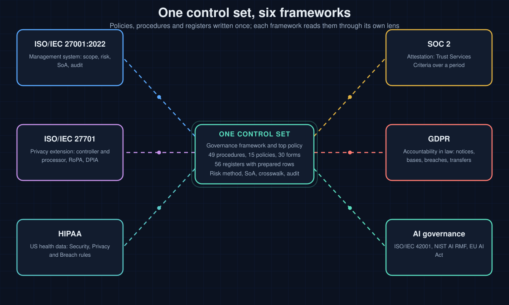

GOVERNANCE · RISK · COMPLIANCE · PRIVACY · AI
GRC Documentation Kit
Original policies, procedures, registers and playbooks for ISO/IEC 27001, ISO/IEC 27701, SOC 2, GDPR, HIPAA and AI governance
Written once, mapped to every framework. 122 documents and 56 Excel registers, with a crosswalk that shows where each control, criterion and article is covered. Markdown you can fork, Word you can sign, Excel you can start filling today. Nothing is copied from any standard; clause and control numbers are cited and the text is the author's own.

Choose a path
How the documents fit together

The playbooks

Twelve steps, each with inputs, activities, outputs and the kit documents to use. Read the playbook.

Ninety days to a designed and evidenced control set, then the observation period the auditor samples. Read the playbook.

Each scene in the life of personal data names the register it updates, so the records stay current without a separate compliance project. Read the playbook.
A practical first week
- Read PB-01, how to use this kit and pick the path that matches your next audit or customer question.
- Fill the readiness questionnaire (60 questions, 10 domains) honestly; every unknown becomes To confirm with an owner and a due date.
- Issue the governance framework, the information security policy and the document control procedure, then open the master list of documents.
- Build the asset register and run the risk method on your ten most important systems; complete the Statement of Applicability.
- Adopt the operating procedures that match your risks, one owner each, and start the evidence calendar.
- Book your first internal audit for twelve weeks out. A template is not evidence of compliance; a followed procedure with records is.
- Not a certification, an attestation or legal advice. Adopting the documents proves nothing until they are followed and evidenced.
- Not a copy of any standard. Buy ISO/IEC 27001 and ISO/IEC 27701 from ISO or your national body; the SOC 2 criteria come from the AICPA; the GDPR text is on EUR-Lex.
- Not a place for your records. Filled registers and evidence stay in your own storage. Free community resources that complement the kit are listed on the resources page.